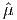

Logical Benders Decomposition
John Mitchell
Linear programs with complementarity constraints (LPCCs) arise, for example, in the modeling of bilevel problems. In such a problem, the constraints include the requirement that some of the variables should be optimal solutions to another problem. For example, when designing a traffic network, the designer needs to account for the fact that individual travelers will usually try to find an optimal solution to their own shortest path problems. The lower level optimization problem can be modeled using its KKT optimality conditions under certain assumptions, which leads to complementarity constraints between slack variables and dual multipliers. For more examples of LPCCs, see [3].
LPCCs can be solved using a variant of Benders decomposition. We consider the LPCC
|
| (1) |
where x ∈ ℝn, y,w ∈ ℝm, b ∈ ℝk, and all other vectors and matrices are dimensioned appropriately. The orthogonality constraint between y and w gives the problem a combinatorial flavor: for each component i ∈{1,…,m}, either set yi = 0 or set wi = 0.
To simplify the presentation, we assume the LP relaxation of (1) is feasible.
If we know upper bounds on each component of y and w, we can construct an equivalent mixed integer program to (1):
|
| (2) |
where D1 and D2 are diagonal matrices whose diagonal entries contain the upper bounds on y and w respectively, and e is a vector of ones. If bounds are not known, we can use a logical Benders decomposition approach to solve the problem. We again use binary variables z ∈ Bm, and we use them to enforce the complementarity restriction. The LPCC (1) can be represented equivalently as
|
| (3) |
By LP duality, φ(z) can be expressed equivalently as:
|
| (4) |
since the primal constraint yi ≤ 0 only exists if zi = 0, so the corresponding dual variable μi can only be nonzero if zi = 0, or equivalently μi = 0 if zi = 1.
In the algorithmic framework, we have a Master Problem to pick z. We then solve the subproblem (4) to find φ(z) and find constraints to add to the Master Problem and restrict the choice of z.
Let (,,) be an optimal dual solution to the subproblem for a particular ẑ, so
φ(ẑ) = bT  . If this is the best z seen so far, then we store ẑ as the incumbent solution.
Initially, there may be no incumbent solution, so the first feasible z becomes the first
incumbent.
. If this is the best z seen so far, then we store ẑ as the incumbent solution.
Initially, there may be no incumbent solution, so the first feasible z becomes the first
incumbent.
We want to minimize φ(z), so we want to restrict attention to choices of z that are better
than ẑ. Any z that allows the dual feasible solution (,, ) will have value at least φ(ẑ), so we
add a constraint on z to rule this out:
) will have value at least φ(ẑ), so we
add a constraint on z to rule this out:
|
| (5) |
This constraint forces either zi = 0 for some i with i > 0 or zi = 1 for some i with i > 0. For such a z, the constraints in the subproblem would either force νi = 0 for some i with i > 0 or force μi = 0 for some i with i > 0.
Similar cuts can be defined when (4) has an unbounded optimal value, using a ray. The positive components of the ray lead to exactly the same constraint as (5) for the Master Problem.
In practice, it is important to try to sparsity the constraint, in order to make it more powerful. This can be done by looking at requiring additional components of μ and/or ν be zero in (4), or by branching on the z variables. The sparsest constraint (5) would involve only one variable, which implies that we can fix that variable.
The Master Problem is a Satisfiability problem, since the constraints (5) are satisfiability constraints.
For more details on logical Benders decomposition for LPCCs, see [2]. For extension to quadratic programs with complementarity constraints, see [1].
We use the following example to illustrate the algorithm.
|
| (6) |
If we choose z = (1, 1, 1) we get the dual LP of the form (4) as follows:
 | (7) |
This problem is unbounded and has a ray:
|
| (8) |
Hence from (5), we obtain the valid constraint:
|
| (9) |
One choice of z that satisfies this constraint is z = (1, 0, 1). The dual problem is then
 | (10) |
This problem is unbounded and has a ray:
|
| (11) |
Hence from (5), we obtain the valid constraint:
|
| (12) |
One choice of z satisfying both (9) and (12) is z = (0, 0, 0). This gives the dual LP
 | (13) |
This problem has an optimal solution with value 5:
|
| (14) |
so from (5), we obtain the valid constraint:
|
| (15) |
The choice z = (0, 0, 0) becomes the incumbent best solution found.
The satisfiability Master Problem has three constraints:
|
| (19) |
The optimal solution is
|
| (20) |
achieving the value 5.
[1] L. Bai, J. E. Mitchell, and J. S. Pang. On convex quadratic programs with linear complementarity constraints. Computational Optimization and Applications, 54(3):517–554, 2013.
[2] J. Hu, J. E. Mitchell, J.S. Pang, K. P. Bennett, and G. Kunapuli. On the global solution of linear programs with linear complementarity constraints. SIAM Journal on Optimization, 19(1):445–471, 2008.
[3] J. Hu, J. E. Mitchell, J.S. Pang, and B. Yu. On linear programs with linear complementarity constraints. Journal of Global Optimization, 53(1):29–51, 2012.